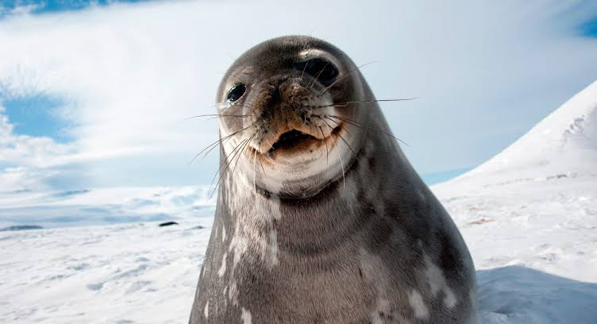
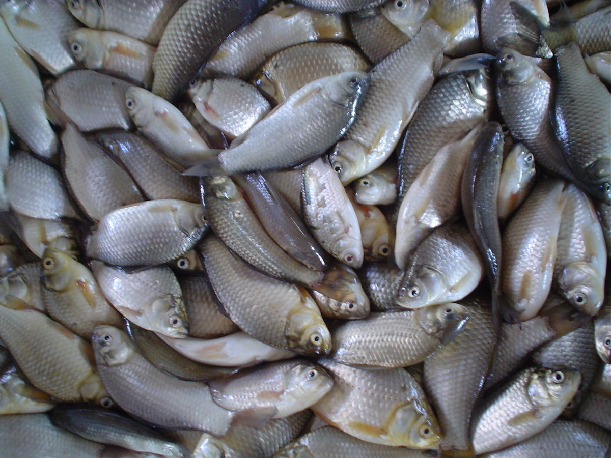
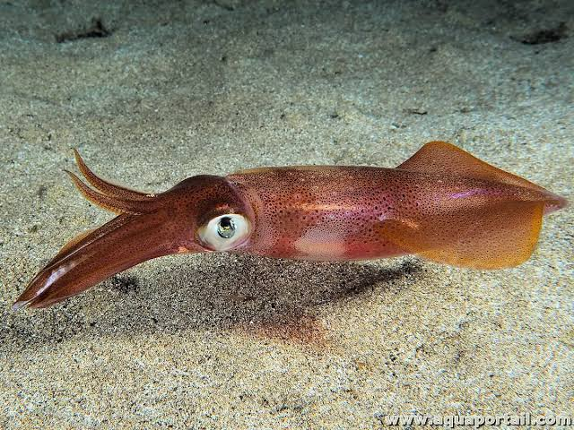
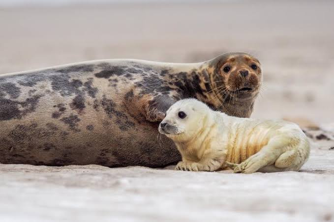
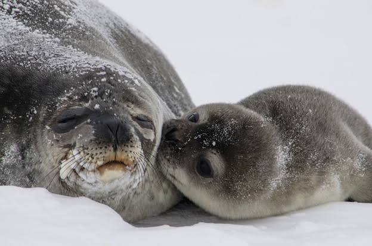

Página web hecha por Rubén Marcial
Las focas son mamíferos marinos fascinantes que viven en aguas frías y templadas. Son expertas nadadoras, tienen cuerpos aerodinámicos, aletas y una gruesa capa de grasa que les permite resistir las bajas temperaturas.
Las focas tienen cuerpos adaptados para el nado. Poseen bigotes sensibles que les permiten detectar vibraciones en el agua, y una densa capa de grasa que las protege del frío. Carecen de orejas externas y sus aletas posteriores les sirven como propulsor bajo el agua.
Se alimentan de peces, calamares, crustáceos y, en ocasiones, aves marinas. Su dieta varía según la región y la especie. Algunas focas son cazadoras oportunistas, adaptándose a los alimentos disponibles en su hábitat.
 Las focas habitan zonas polares, costas frías, islas remotas y, en menor medida, zonas templadas. Prefieren áreas con abundancia de hielo o costas rocosas donde pueden descansar y criar a sus crías lejos de depredadores.
Son animales sociales que forman colonias de decenas a miles de individuos. Pasan la mayor parte del tiempo nadando, cazando o descansando en tierra. Se comunican mediante sonidos, posturas y vocalizaciones, sobre todo en época de reproducción.
